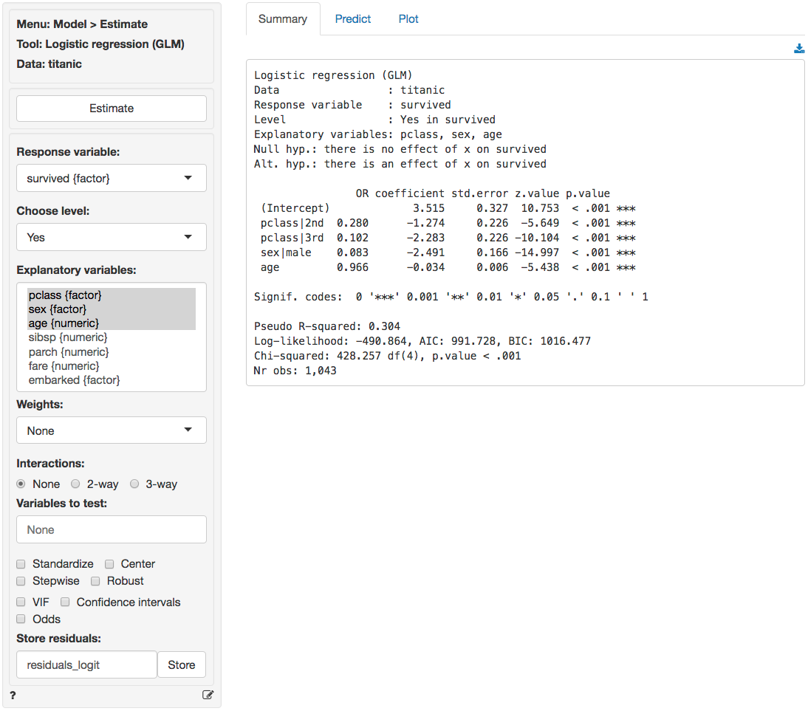
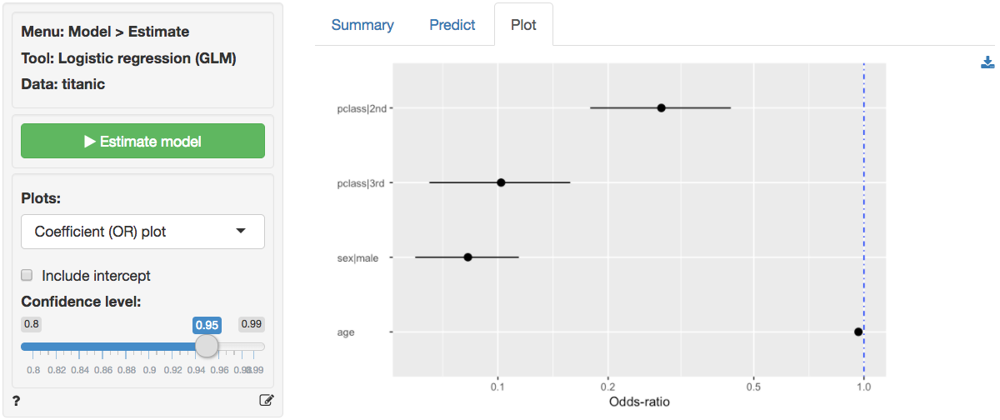
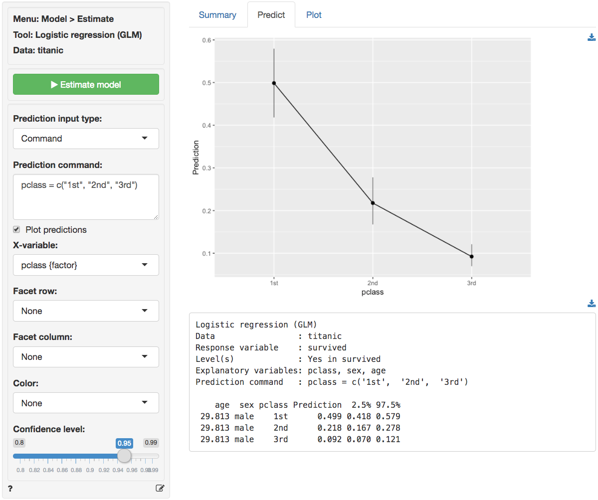
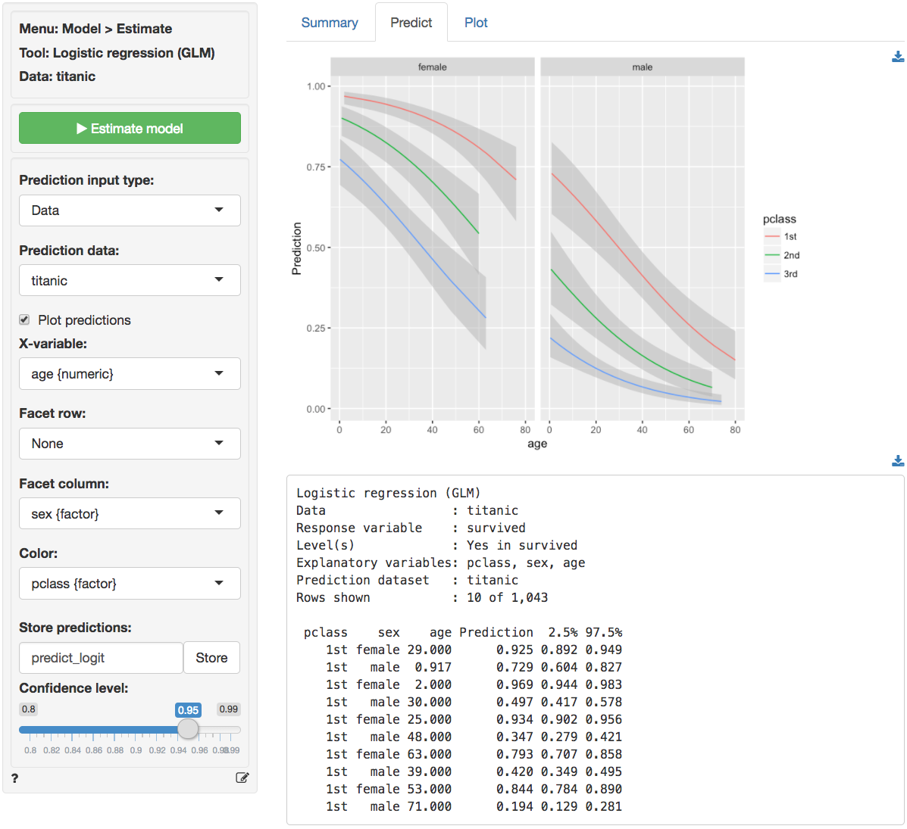
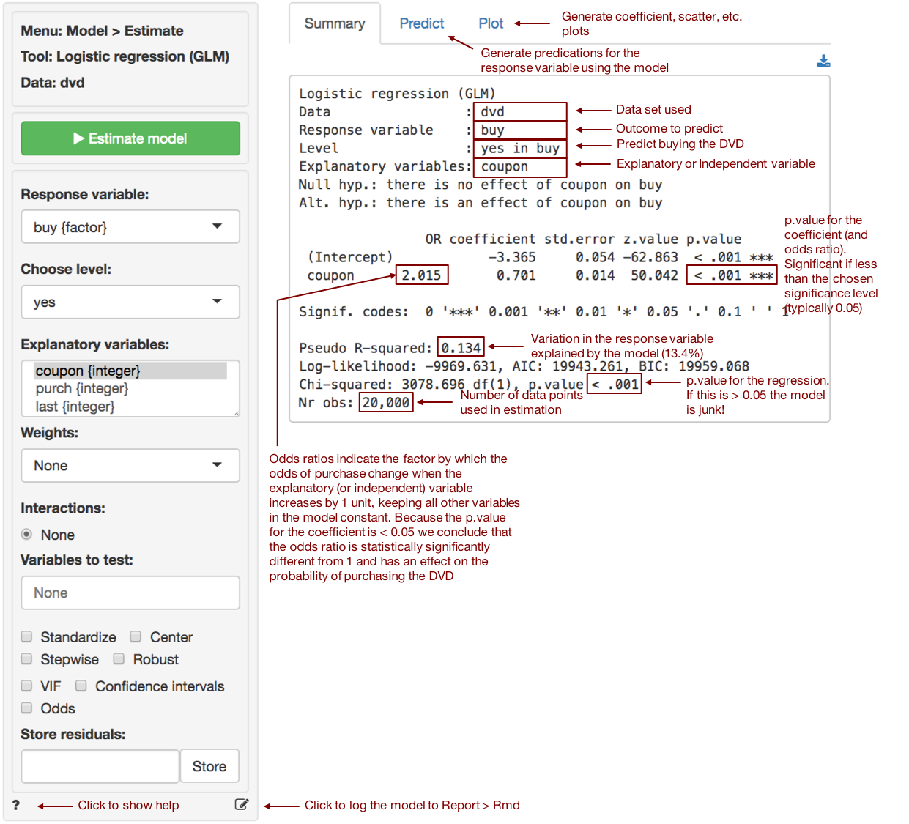

Model > Estimate > Logistic regression (GLM)
Estimate a Logistic regression for classification
Functionality
To estimate a logistic regression we need a binary response variable and one or more explanatory variables. We also need specify the level of the response variable we will count as success (i.e., the Choose level: dropdown). In the example data file titanic, success for the variable survived would be the level Yes.
To access this dataset go to Data > Manage, select examples from the Load data of type dropdown, and press the Load button. Then select the titanic dataset.
In the Summary tab we can test if two or more variables together add significantly to the fit of a model by selecting variables in the Variables to test dropdown. This functionality can be very useful to test if the overall influence of a variable of type factor is statistically significant.
Additional output that requires re-estimation:
- Standardize: Odds-ratios can be hard to compare if the explanatory variables are measured on different scales. By standardizing the explanatory variables before estimation we can see which variables move-the-needle most. Radiant standardizes data for logistic regression by replacing all explanatory variables \(X\) by \((X - mean(X))/(2 \times sd(X))\). See Gelman 2008 for discussion.
- Center: Replace all explanatory variables X by X - mean(X). This can be useful when trying to interpret interaction effects
- Stepwise: A data-mining approach to select the best fitting model. Use with caution!
- Robust standard errors: When
robustis selected the coefficient estimates are the same as a normal logistic regression standard errors are adjusted. This adjustment is used by default when probability weights are specified in estimation.
Additional output that does not require re-estimation:
- VIF: Variance Inflation Factors and Rsq. These are measures of multi-collinearity among the explanatory variables
- Confidence intervals: Coefficient confidence intervals
- Odds: Odds-ratios with confidence intervals
Example 1: Titanic Survival
As an example we will use a dataset that describes the survival status of individual passengers on the Titanic. The principal source for data about Titanic passengers is the Encyclopedia Titanic. One of the original sources is Eaton & Haas (1994) Titanic: Triumph and Tragedy, Patrick Stephens Ltd, which includes a passenger list created by many researchers and edited by Michael A. Findlay. Suppose we want to investigate which factors are most strongly associated with the chance of surviving the sinking of the Titanic. Lets focus on four variables in the database:
- survived = a factor with levels
YesandNo - pclass = Passenger Class (1st, 2nd, 3rd). This is a proxy for socio-economic status (SES) 1st ~ Upper; 2nd ~ Middle; 3rd ~ Lower
- sex = Sex (female, male)
- age = Age in years
Select survived as the response variable and Yes in Choose level. Select pclass, sex and age as the explanatory variables. In the screenshot below we see that each of the coefficients is statistically significant (p.value < .05) and that the model has some predictive power (Chi-squared statistic < .05). Unfortunately the coefficients from a logistic regression model are difficult to interpret. The OR column provides estimated odds-ratios. We see that the odds of survival were significantly lower for 2nd and 3rd class passengers compared to 1st class passenger. The odds of survival for males were also lower than for females. While the effect of age is statically significant, for each extra year in age the odds of survival are not as strongly affected (see also the standardized coefficient).
For each of the explanatory variables the following null and alternate hypotheses can be formulated for the odds ratios:
- H0: The odds-ratio associated with explanatory variable x is equal to 1
- Ha: The odds-ratio associated with explanatory variable x is not equal to 1
The odds-ratios from the logistic regression can be interpreted as follows:
- Compared to 1st class passengers, the odds of survival for 2nd class passengers was 72% lower, keeping all other variables in the model constant.
- Compared to 1st class passengers, the odds of survival for 3rd class passengers was 89.8% lower, keeping all other variables in the model constant.
- Compared to female passengers, the odds of survival for male passengers was 91.7% lower, keeping all other variables in the model constant.
- For an increase in passenger age of 1 year the odds of survival decreased by 3.4%, keeping all other variables in the model constant.

In addition to the numerical output provided in the Summary tab we can also evaluate the link between survival, class, sex, and age visually (see Plot tab). In the screenshot below we see a coefficient (or rather an odds-ratio) plot with confidence intervals. The relative importance of gender and class compared to age clearly stands out. Note: click the check box for standardized coefficients (i.e., standardize) in the Summary tab and see if your conclusion changes.

Probabilities, are often more convenient for interpretation than coefficients or odds from a logistic regression model. We can use the Predict tab to predict probabilities for different values of the explanatory variable(s) (i.e., a common use of Logistic regression models). First, select the type of input for prediction using the Prediction input type dropdown. Choose either an existing dataset for prediction (“Data”) or specify a command (“Command”) to generate the prediction inputs. If you choose to enter a command you must specify at least one variable and one value in the Prediction command box to get a prediction. If you do not specify a value for each variable in the model either the mean value or the most frequent level will be used. It is only possible to predict outcomes based on variables used in the model (e.g., age must be one of the selected explanatory variables to predict survival probability for a 90 year old passenger).
To see how survival probabilities change across passenger classes select Command from the Prediction input type dropdown in the Predict tab, type pclass = levels(pclass), and press return.

The figure above shows that the probabilities drop sharply for 2nd and 3rd class passengers compared to 1st class passengers. For males of average age (approx. 30 yo in the sample) the survival probability was close to 50%. For 30 yo, male, 3rd class passengers this probability was closer to 9%.
age sex pclass pred
29.881 male 1st 0.499
29.881 male 2nd 0.217
29.881 male 3rd 0.092To see the effects of gender type sex = levels(sex) in the Prediction command box and press return. For average age females in 3rd class the survival probability was around 50%. For males with the same age and class characteristics the chance of survival was closer to 9%.
age pclass sex pred
29.881 3rd female 0.551
29.881 3rd male 0.092To see the effects for age type age = seq(0, 100, 20) in the Prediction command box and press return. For male infants in 3rd class the survival probability was around 22%. For 60 year old males in 3rd class the probability drops to around 3.5%. For the oldest males on board, the model predicts a survival probability close to 1%.
pclass sex age pred
3rd male 0 0.220
3rd male 20 0.124
3rd male 40 0.067
3rd male 60 0.035
3rd male 80 0.018
3rd male 100 0.009For a more comprehensive overview of the influence of gender, age, and passenger class on the chances of survival we can generate a full table of probabilities by selecting Data from the Prediction input dropdown in the Predict tab and selecting titanic from the Prediction data dropdown. There are too many numbers to easily interpret in table form but the figure gives a clear overview of how survival probabilities change with age, gender, and pclass:

You can also create a dataset for input in Data > Transform using Expand grid or in a spreadsheet and then paste it into Radiant through the Data > Manage tab. You can also load csv data as input. For example, paste the following link https://radiant-rstats.github.io/docs/examples/glm_pred.csv file into Radiant through the Data > Manage tab and try to generate the same predictions. Hint: Use csv (url) to load the data link above.
Once the desired predictions have been generated they can be saved to a CSV file by clicking the download icon on the top right of the screen. To add predictions to the dataset used for estimation, click the Store button.
Example 2: DVD sales
We will use the dataset dvd.rds, available for download from GitHub. The data contain information on a sample of 20,000 customers who received an “instant coupon.” The value of the coupon was varied between $1 and $5 and randomly assigned to the selected customers. We can use logistic regression to estimate the effect of the coupon on purchase of a newly released DVD. Customers who received the coupon and purchased the DVD are identified in the data by the variable buy. Because the variable we want to predict is binary (buy = yes if the customer purchased the DVD and buy = no if she did not), logistic regression is appropriate.
To keep the example simple, we use only information on the value of the coupon customers received. Hence, buy is our response variable and coupon is our explanatory (or predictor) variable.

The regression output shows that coupon value is a statistically significant predictor of customer purchase. The coefficient from the logistic regression is 0.701 and the odds ratio is equal to 2.015 (i.e., \(e^{0.701}\)). Because the odds ratio is larger than 1, a higher coupon value is associated with higher odds of purchase. Also, because the p.value for the coefficient is smaller than 0.05 we conclude that (1) the coefficient is statistically significantly different from 0 and (2) the odds ratio is statistically significantly different from 1. An odds ratio of 1 is equivalent to a coefficient estimate of 0 in a linear regression and implies that the explanatory (or predictor) variable has no effect on the response variable. The estimated odds ratio of 2.015 suggests that the odds of purchase increase by 101.6% for each dollar increase in coupon value.
Report > Rmd
Add code to Report > Rmd to (re)create the analysis by clicking the icon on the bottom left of your screen or by pressing ALT-enter on your keyboard.
If a plot was created it can be customized using ggplot2 commands or with gridExtra. See example below and Data > Visualize for details.
plot(result, plots = "coef", custom = TRUE) +
labs(title = "Coefficient plot")R-functions
For an overview of related R-functions used by Radiant to estimate a logistic regression model see Model > Logistic regression.
The key functions used in the logistic tool are glm from the stats package and vif and linearHypothesis from the car package.